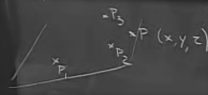
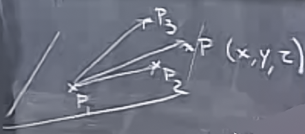
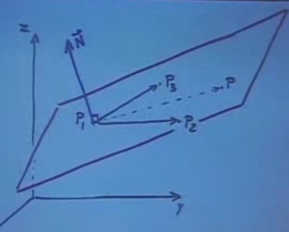
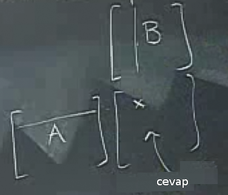
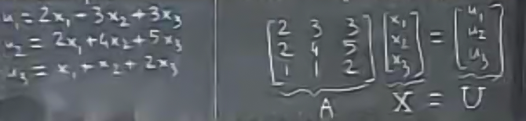

Çapraz çarpımlar hakkında bilinmesi gereken bazı şaşırtıcı gelebilecek kurallar var. Bunlardan bir tanesi $\vec{A} \times \vec{B} \ne \vec{B} \times \vec{A}$. Niye böyle? Bunu görmenin yollarından bir tanesi geometrik olarak düşünmek. Sağ el kuralını düşünürsek, yönün niye farklı olabileceğini anlarız. İşaretler tam terstir, yani
$$ \vec{A} \times \vec{B} = - \vec{B}\times \vec{A} $$
Determinant açılımını da düşünürsek, ikinci terim eksi işareti taşır, ama çarpım sırası değişince eksi işaretinin yeri değişir.
Peki $\vec{A} \times \vec{A}$ nedir? Çapraz çarpım alan hesabında önemli olduğuna göre ve $\vec{A} \times \vec{A}$'in bir parallelogram yaratmayacağına göre (ya da sıfır alanlı bir parallelogram yaratacağına göre) cevap sıfır, daha doğrusu sıfır "vektörü" (o vektörün büyüklüğü de tabii ki sıfır).
Uygulamalar
Diyelim ki bize uzayda 3 nokta verildi, ve bu noktaları içeren bir düzlemin formülünü bulmamız gerekiyor. 3 nokta 3 boyutlu uzayda bir düzlem yaratmak için yeterli, bunu biliyoruz. Bunun için bir dördüncü nokta $P$ hayal edelim ki bu noktanın öğeleri $x,y,z$ olsun.

Şimdi düzlemi tanımlayalım. Şu şekilde 3 tane vektör yaratalım

Bu vektörlerin aynı düzlem üzerinde olması, aynı zamanda bu vektörlerin tanımladığı parallelipipe'nin hacimsiz olması demektir. Yani birisi üzerinden bastırıp onu dümdüz etmiştir sanki, sadece alanı kalmıştır.
Bunu formülsel olarak söylemenin yolu şudur:
$$ det(\vec{P_1P},\vec{P_2P},\vec{P_3P}) = 0 $$
Gerçek uygulama bağlamında problem bize $P_1,P_2,P_3$ sayılarını vermiş olacaktı bu sayıları üstteki formüle yerleştirirdik, tanımsız olan sadece $x,y,z$ kalırdı, ve bu $x,y,z$'ler ile beraber elde edilecek formül bu noktaların tanımladığı alan olurdu.
Bu hesabı daha da hızlı yapmanın bir yolu var. Alttaki resmi düşünelim.

Resme bakalım. Düzlem üzerindeki iki vektöre dik bir $\vec{N}$'i nasıl hesaplayacağımızı biliyoruz (çarpraz çarpım ile). Devam edelim, $x,y,z$ değişkenlerini içeren üçüncü bir vektör $\vec{P_1P}$'in aynı düzlemde olması demek, bu $\vec{N}$ vektörüne dik olması demektir ($\vec{N}$ "normal vektör" olarak isimlendirilir). Bunu matematiksel olarak nasıl ifade ederiz? Dikliğin formülsel karşılığını biliyoruz, noktasal çarpım sıfır olmalı.
$$ \vec{P_1P} \cdot \vec{N} = 0 $$
$\vec{N}$ hesabı için
$$ \vec{N} = \vec{P_1P_2} \times \vec{P_1P_3}$$
Bu kadar.
Ek not, eğer çapraz çarpımın sırasını değiştirmiş olsaydım, o zaman üstteki hesabın ters yönünde bir başka dik vektör elde ederdim, düzlem yine aynı olurdu, sadece başka bir normal vektör olurdu. Bu problem değil, herhangi bir düzlemin sonsuz sayıda normal vektörü olabilir. Elde ettiğimiz bir normal vektörü herhangi bir sabit ile çarpınca yeni bir normal vektör elde etmiş olurdum çünkü.
$$ \vec{P_1P} \cdot \vec{N} = \vec{P_1P} \cdot (\vec{P_1P_2} \times \vec{P_1P_3}) $$
Eşitliğin sağındaki çarpıma üçlü çarpım (triple product) deniyor.
Son formülü takip edersek determinant sıfırlığı üzerinden tanımlanan diğer formül ile aynı sonucu getirdiğini görürdük.
Matrisler
$A \ B$ şeklindeki bir matris çarpımında hangi hücrenin hangi kolon, hangi satırın noktasal çarpım sonucu (answer) olduğunu hayal edebilmek için alttaki şekil faydalı olabilir. $B$, sonuç matrisinin (altta boş) üstünde hayal edilir, ve çarpı işaretindeki sonuç için onun hemen üstündeki kolona, ve hemen yanındaki satıra gidilir.

Sezgisel (intuitive) olarak $AB$ çarpımı neyi temsil eder? Bu çarpımı şöyle düşünebiliriz, önce $B$ transformu yap, sonra $A$ transformu yap. Bu biraz acaip gelebilir, çünkü normalde işlemleri soldan sağa yapmaya alışığızdır. Fakat $AB$'yi belki de sıralı fonksiyon işlemleri olarak görmek daha doğru olur, mesela $f(g(x))$ gibi. Burada önce $g$ uygulanır, sonra $f$ uygulanır.
$$ (AB)X = A(BX) $$
Üstteki aktarım kanunudur (associativity) ve "iyi davranan" çarpımların bir özelliğidir. Bu arada üstteki çarpımın noktasal değil, matris çarpımı olduğuna dikkat edelim.
Not: $AB \ne BA$. En azından sağdaki çarpımın olabileceğini beklemememiz gerekir. $AB$ çarpımı boyutlar uyduğu için mümkün olmuştur, fakat bu uyumlu boyutlar yerler değişince belki mümkün olmaz. Boyutlar olsa bile sonuç farklı çıkabilir, o sebeble eşitlik farz edilemez. Ufak bir Python kodu ile test edelim:
a = [[2,3,4],[4,4,5],[9,3,2]]
b = [[2,3,9],[4,2,5],[9,3,2]]
print np.dot(a,b)
print np.dot(b,a)
[[ 52 24 41]
[ 69 35 66]
[ 48 39 100]]
[[97 45 41]
[61 35 36]
[48 45 55]]
Sonuçlar farklı çıkacak.
Örnek
Çevirmek / Rotasyon
Bir düzlem üzerinde bir vektörü $90^o$, saat yönü tersine çevirmek için
$$ R = \left[\begin{array}{rr} 0 & -1 \\ 1 & 0 \end{array}\right] $$
İlginç bir durum
$$ R^2 = \left[\begin{array}{rr} -1 & 0 \\ 0 & -1 \end{array}\right] $$
Yani birim (identity) matrisinin negatifi. Niye böyle oldu? Düşünelim, eğer bir vektörü 90 derece döndürürsem, sonra bir daha 90 derece döndürürsem, o zaman tam tersi yöne gitmiş olurum. Birim matrisin negatifi de budur zaten.
Matrisler denklem sistemlerini temsil edebilirler, alttaki gibi

Bu tür sistemlerde belki $X$ değerleri verilmiştir, $U$'yu hesaplamamız isteniyordur, ya da tam tersi de olabilir, $U$ verilmiştir, $X$ hesaplamamız isteniyordur. Ters yönde gitmek için matris tersini (inverse) almak gerekir.
Not: Bir matrisin tersini alabilmemiz için onun kare matrisi olması gerekir, yani n x n boyutunda olmalıdır.
Ters yönde çözüme gelelim. Mesela elimizde şöyle bir sistem var
$$ AX = B$$
$$ A^{-1}(AX) = A^{-1}B$$
$$ X = A^{-1}B$$
Böylece $X$'i elde edebilmiş oluruz. O zaman $A$ matrisinin tersini alma operasyonunu yapabiliyorsak, istediğimiz herhangi bir lineer denklem sistemini çözebiliriz demektir.
Tersini alma işlemini ufak matrisler için elle hesaplamanın yöntemi alttaki formülden geçiyor.
$$ A^{-1} = \frac{1}{det(A)} = adj(A)$$
Üstte $adj$ diye tanımlanan bir matrisin bitişiğini (adjoint matrix) nasıl buluruz?
Mesela
$$ \left[\begin{array}{rrr} 2 & 3 & 3 \\ 2 & 4 & 5 \\ 1 & 1 & 2 \end{array}\right] $$
Adımlar
1) Bu matrisin "minörlerini" bulmak lazım. O nedir? Aslında minörleri determinant işlemini işlediğimizde görmüştük, sadece bu ismi vermemiştik. Onlar en üst satırdaki matris hücrelerini teker teker merkez alıp, onun satırını, kolonunu iptal ettikten sonra geri kalan daha ufak bölgenin determinantlarıydı. Bitişiklik için bu hesabı sadece üst satır için değil, tüm hücreler için yapacağız. Üstteki örnek için
$$ \left[\begin{array}{rrr} 3 & -1 & -2 \\ 3 & 1 & -1 \\ 3 & 4 & 2 \end{array}\right] $$
2) Kofaktörler (cofactors). Dama tahtası gibi bir şekil düşünelim, bunun üzerinde +,- işaretleri olsun.
$$ \begin{array}{rr} + - + \\ - + - \\ + - + \end{array} $$
Kural şöyle, mesela üst sol köşede + ile başladık, onun hemen yani, ve altı onun tam tersi olmalıdır.
Kofaktörleri şöyle kullanırız, bitişiklikteki tekabül eden değerlere bakarız, eğer kofaktör bir değer için + ise, onu olduğu gibi bırakırız, - ise, işaretini değiştiririz, eksiyi artı, artıyı eksi yaparız.
Örnekteki bitişiklik şu hale gelir:
$$ \left[\begin{array}{rrr} 3 & 1 & -2 \\ -3 & 1 & 1 \\ 3 & -4 & 2 \end{array}\right] $$
3) Devriğini Al (Transpose)
Satırlar ve kolonların yerini değiştir.
$$ \left[\begin{array}{rrr} 3 & -3 & 3 \\ 1 & 1 & -4 \\ -2 & 1 & 2 \end{array}\right] $$
4) Her şeyi $det(A)$'ya böl
$$ \left|\begin{array}{rrr} 2 & 3 & 3 \\ 2 & 4 & 5 \\ 1 & 1 & 2 \end{array}\right| = 3 $$
$$ A^{-1} = \frac{1}{3} \left[\begin{array}{rrr} 3 & -3 & 3 \\ 1 & 1 & -4 \\ -2 & 1 & 2 \end{array}\right] $$